MedTech Admin
MedTech admin portal
Run the platform behind every Patient Support Programme — set up scientific offices, onboard doctors and pharmacies, approve clinics, keep the platform-wide rules and act on misuse flags.
For MedTech system administrators.
Click the screenshot to enlarge it.
Before you start
The admin portal is a web page for a computer. Everything in it applies to the whole platform, across every scientific office.
- Your sign-in. You sign in with your own phone number and password. Only MedTech administrators can use this portal.
- Unique codes. The platform gives every scientific office, doctor and pharmacy a code that never changes:
SIOF-EG-…for an office,DOC-EG-…for a doctor,PHA-EG-…for a pharmacy. Operators use these codes to attach doctors and pharmacies to their programmes. - Patients stay anonymous on the programme pages. On Abuse flags, PSP dashboards, Box corrections and Notifications, a patient only ever appears as an anonymous code such as
ANON-77874BC1— never by name. - Some actions cannot be undone. Merging two provider records and deleting a patient account are permanent. The screen tells you so before you confirm.
Sign in
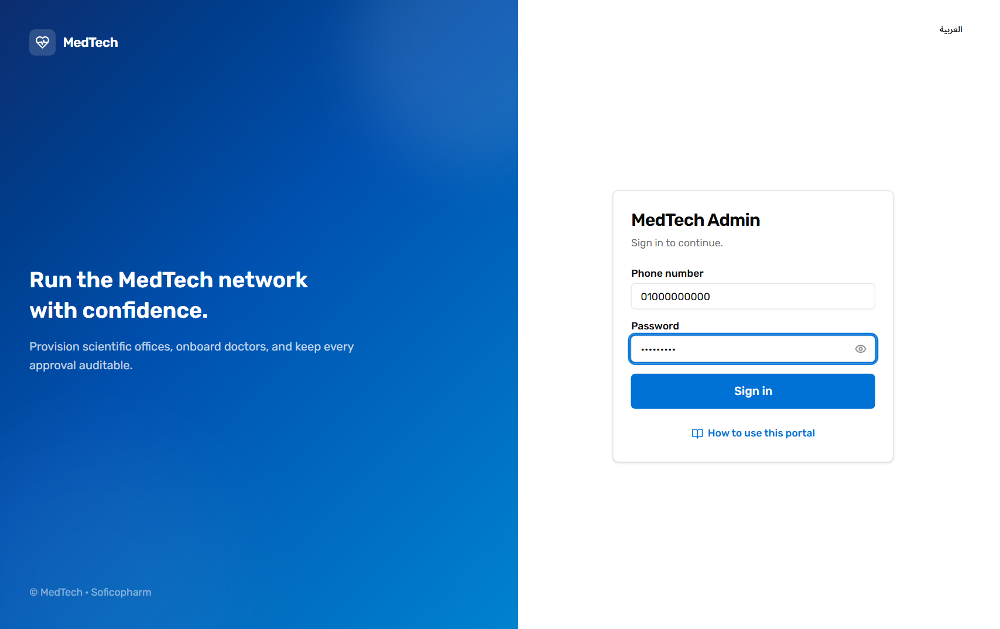
- 1Phone number — your phone number.
- 2Password — your password.
- 3Click the eye to show the password while you type it.
- 4Sign in opens the portal.
- 5Switch the screen between English and العربية at any time.
- 6How to use this portal opens this guide in a new tab.
The home page
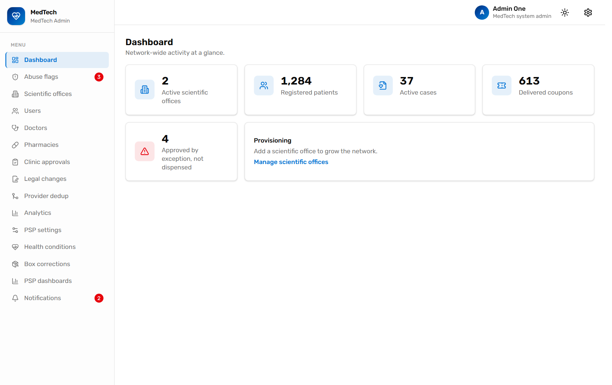
- 1The menu on the left opens every page of the portal.
- 2Abuse flags sits at the top of the menu. The red number counts the open flags that are waiting for a decision; it goes down as you decide them.
- 3Active scientific offices — how many offices are live on the platform. Beside it: Registered patients, Active cases and Delivered coupons.
- 4Approved by exception, not dispensed — approved cases whose medicine has not been handed over.
- 5Manage scientific offices opens the list of offices.
- 6The gear opens the settings menu (below). The sun button beside it switches between light and dark.
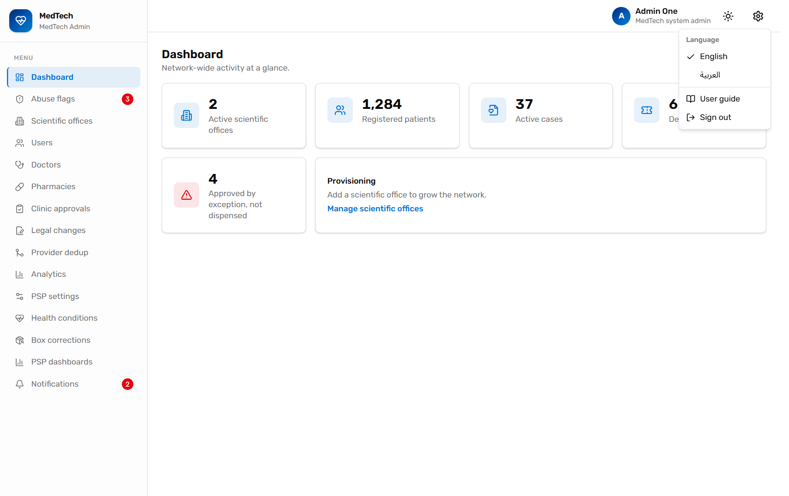
- 1Language — English or العربية.
- 2User guide opens this guide in a new tab, in the language you are reading.
- 3Sign out — always sign out when you leave a shared computer.
Scientific offices
A scientific office is one organisation on the platform. Its programme operator team signs in to its own portal to build programmes and run cases; you create the office and its first admin here.
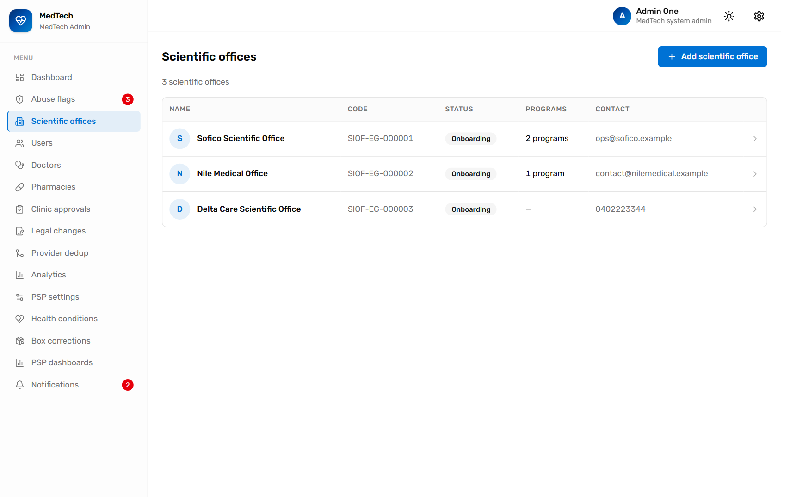
- 1Add scientific office creates a new office.
- 2Click an office to open its page.
- 3Code — the office's unique code, issued by MedTech. It never changes.
- 4Status — Onboarding while the office is being set up, Active once it is live.
- 5Programs — how many programmes the office has.
Add a scientific office
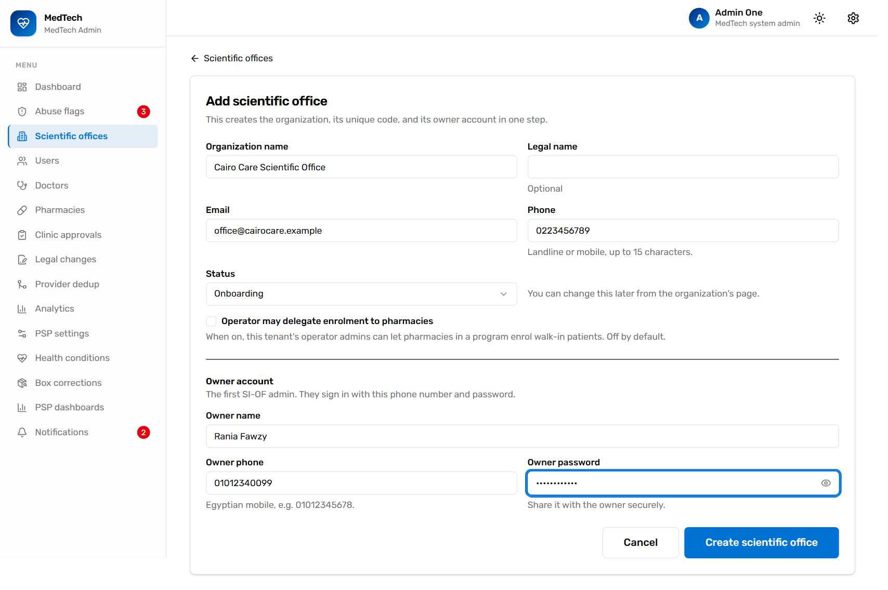
- 1Organization name — required. Legal name is optional; Email and Phone are the office's contact details.
- 2Status — start the office as Onboarding or Active. You can change it later from the office's page.
- 3Operator may delegate enrolment to pharmacies — tick it to let this office's operator admins allow pharmacies in a programme to enrol walk-in patients. It is off by default.
- 4Owner account — the office's first admin. They sign in with the Owner phone (an Egyptian mobile, such as 01012345678) and the password you set.
- 5Owner password — at least 9 characters, including a number. Share it with the owner securely.
- 6Create scientific office creates the office, its unique code and the owner account in one step, then opens the office's page.
An office's page
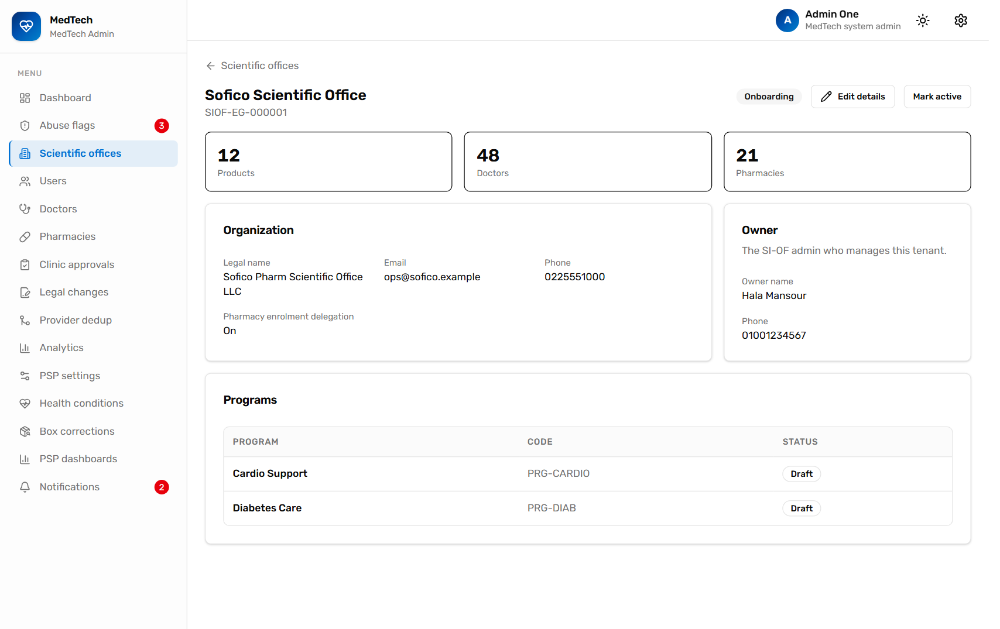
- 1The office's name, with its unique code under it.
- 2The status.
- 3Mark active makes an Onboarding office Active; on an active office the same button reads Move to onboarding. Edit details, beside it, changes the office's name and contact details.
- 4Pharmacy enrolment delegation — On or Off.
- 5Owner — the office admin who manages this office, with their phone number.
- 6Programs — the office's programmes with their code and status. You only view them here; the office builds them in its own portal.
The three boxes at the top count the office's Products, Doctors and Pharmacies.
Let an existing office delegate enrolment to pharmacies
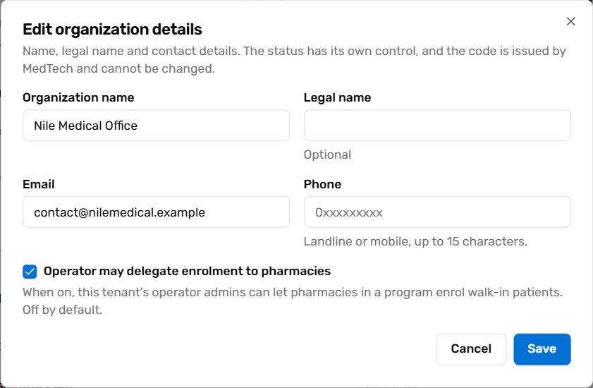
- 1Edit organization details opens from Edit details on the office's page.
- 2Change the Organization name, Legal name, Email or Phone here. The code cannot be changed, and the status has its own button.
- 3Tick Operator may delegate enrolment to pharmacies.
- 4Save — the office's page then shows Pharmacy enrolment delegation: On.
This switch only gives the office's operator admins the choice. They decide, programme by programme, which pharmacies may enrol patients.
Users
Users lists every account on the platform: patients, doctors, doctor assistants, pharmacies, scientific office admins and MedTech admins.
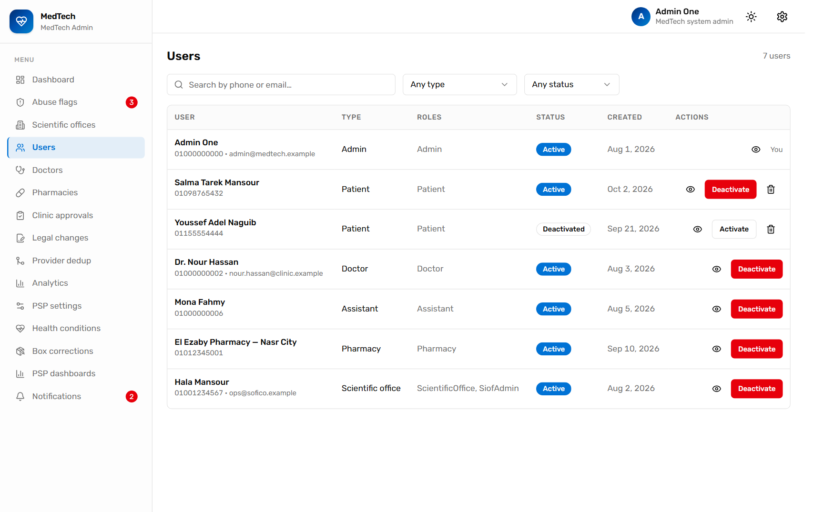
- 1Search by phone number or email.
- 2Show only one type of account: Patient, Doctor, Assistant, Admin, Scientific office or Pharmacy. Here, only patients.
- 3Show only active or only deactivated accounts.
- 4The eye (or a click on the name) opens the account's details.
- 5Deactivate signs the account out on every device immediately; it cannot sign in again until it is reactivated. You confirm first.
- 6Activate turns a deactivated account back on.
- 7The bin appears on patient accounts only: it deletes the patient's account (see below).
Your own account is marked You in the list. You cannot deactivate yourself.
Account details
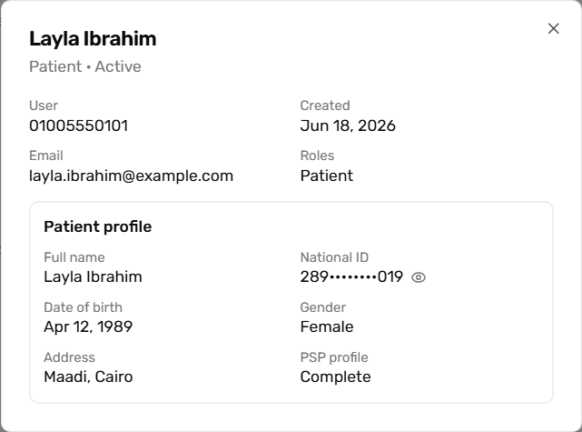
- 1The account's name.
- 2Its type and status.
- 3Patient profile — the patient's details. Other accounts show their own block instead: a doctor's licence, code, specialities and clinics; a pharmacy branch's code, licence and approval; the doctor an assistant works for; a scientific office's contact details.
- 4The National ID is partly hidden. Click the eye to show it; it hides itself again after a few seconds.
- 5PSP profile — Complete or Incomplete: whether the patient has finished their programme profile in the app.
Delete a patient account
Patients can ask for their account to be deleted. Click the bin on the patient's row, then choose how far the deletion goes.
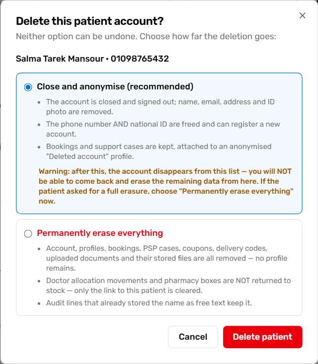
- 1Close and anonymise (recommended) — the account is closed and signed out, and the name, email, address and ID photo are removed.
- 2The phone number and national ID are freed, so they can register a new account. Bookings and support cases stay, attached to an anonymous Deleted account profile.
- 3Read the warning: after this, the account leaves the list and you can no longer erase the rest of its data from here.
- 4Permanently erase everything — the second option (below).
- 5Delete patient carries out the first option.
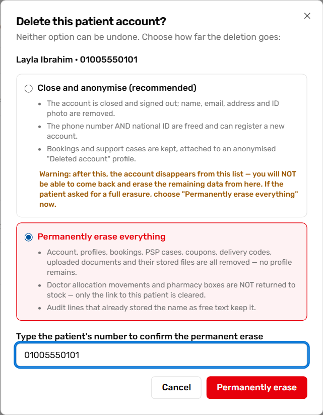
- 1Permanently erase everything is selected.
- 2The account, profiles, bookings, programme cases, coupons, delivery codes and uploaded documents are all removed. No profile remains.
- 3Doctors' patient places and pharmacy boxes are not returned to stock; only their link to this patient is cleared. Audit lines that already stored the name as text keep it.
- 4Type the patient's phone number exactly as shown. The button stays disabled until it matches.
- 5Permanently erase deletes everything.
| Close and anonymise | Permanently erase everything | |
|---|---|---|
| Account | Closed and signed out | Removed |
| Name, email, address, ID photo | Removed | Removed |
| Phone number and national ID | Freed for a new account | Freed for a new account |
| Bookings and programme cases | Kept, under Deleted account | Removed |
| Can you erase more later from this page? | No | — |
Doctors
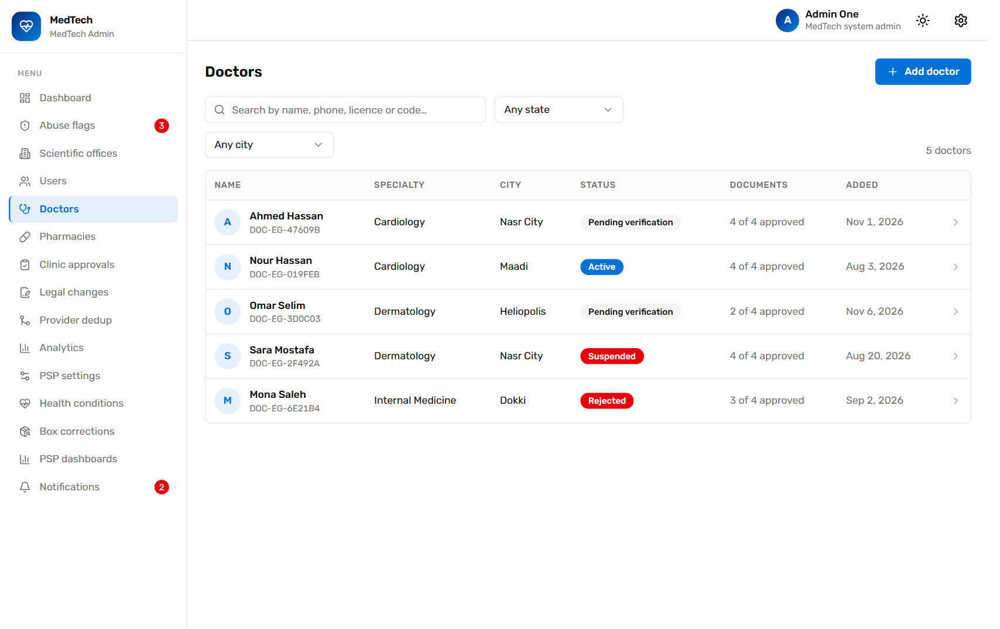
- 1Add doctor creates a doctor account.
- 2Search by name, phone, licence number or code.
- 3Filter by status. The box under it filters by city.
- 4Click a doctor's name to open their page.
- 5The doctor's unique code (
DOC-EG-…). - 6The status: Draft, Pending verification, Active, Suspended, Rejected or Deactivated.
- 7Documents — how many of the doctor's verification documents are approved.
Add a doctor
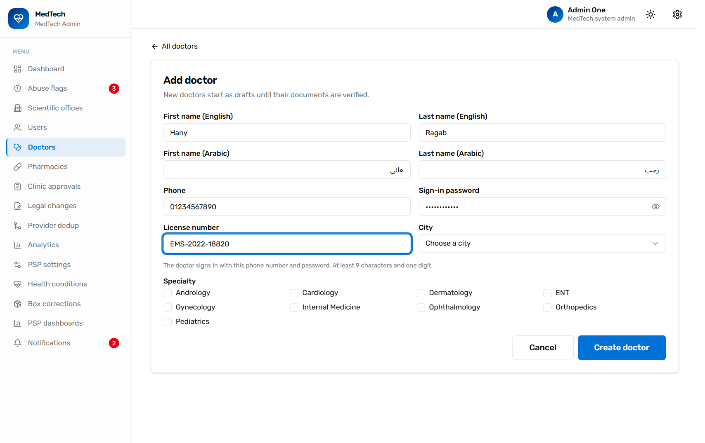
- 1First name (English) and Last name (English).
- 2First name (Arabic) and Last name (Arabic) — required: a doctor cannot be activated without the Arabic name.
- 3Phone — the doctor's mobile. They sign in with it.
- 4Sign-in password — you choose it: at least 9 characters and one digit. Click the eye to check what you typed.
- 5License number. The City beside it is required too.
- 6Specialty — tick one or more.
- 7Create doctor creates the account and opens the doctor's page.
A new doctor starts as a draft until their documents are verified. Give the doctor their phone number and password yourself.
A doctor's page and activation
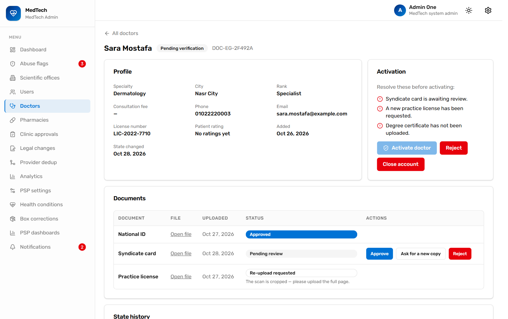
- 1The doctor's name, status and unique code.
- 2Profile — specialty, city, rank, consultation fee, contact details and licence number.
- 3Activation lists what still stands in the way, one line each — here a document awaiting review, a new copy that was requested and a document never uploaded. When nothing is missing it says All requirements are met. This doctor can go live.
- 4Activate doctor makes the doctor active and visible to patients. It stays disabled until every requirement is met.
- 5Reject sends the doctor back with a reason.
- 6Close account closes the doctor's account.
The buttons change with the doctor's status: an active doctor has Suspend, a rejected doctor has Send for review, and so on. Every change asks you to confirm first, including Activate doctor. For Reject, Suspend and Close account a reason is required, and the doctor sees it — say what has to change. For other changes the reason is an optional note for the record. A closed account can be reopened: Activate doctor on it brings the doctor back to patients, and the confirmation says so.
Further down the page: State history (every status change, with its reason and date) and Clinics (the doctor's clinics).
Review a doctor's documents
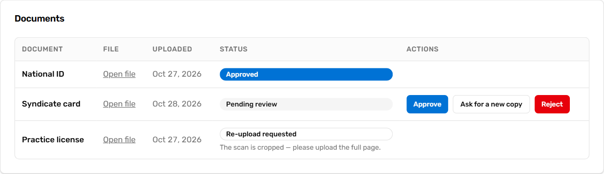
- 1Documents — the national ID, syndicate card, practice licence and degree certificate the doctor uploaded.
- 2Open file opens the document in a new tab.
- 3The document's status: Pending review, Approved, Rejected or Re-upload requested. The note you sent the doctor shows under it.
- 4Approve accepts the document.
- 5Reject refuses it. Add a note so the doctor knows what to fix.
Between the two, Ask for a new copy lets the doctor replace the file — tell them what is wrong with it. The buttons only appear on documents that are waiting for review.
Pharmacies
Each pharmacy here is one branch, with one sign-in shared by everyone at its counter.
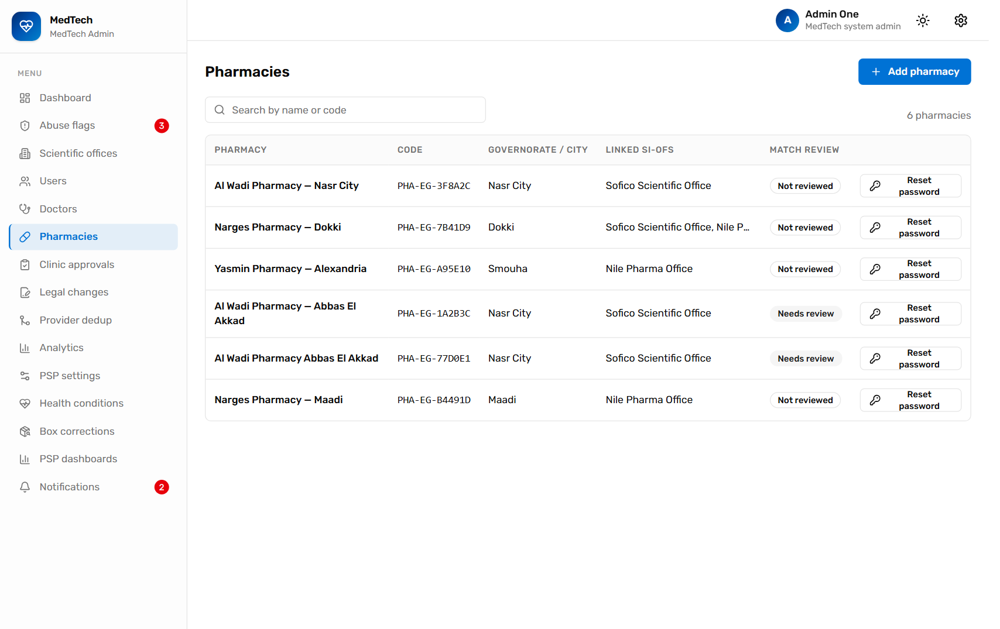
- 1Add pharmacy creates a pharmacy and its sign-in.
- 2Search by name or code.
- 3Code — the pharmacy's unique code (
PHA-EG-…). Operators attach the pharmacy to a programme by this code. - 4Match review — Needs review means the platform suspects this pharmacy is a duplicate of another one. Resolve it in Provider dedup.
- 5Reset password gives the branch a new temporary password.
Click a pharmacy's name to open its page.
Add a pharmacy
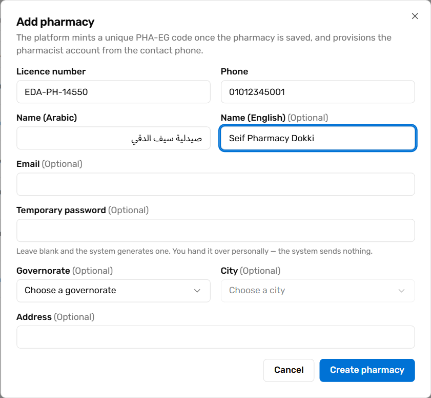
- 1Licence number — required. Two pharmacies can never share a licence number: if one already has it, the form stops and says so.
- 2Phone — required. The pharmacist's sign-in is created from this number.
- 3Name (Arabic) — required, in Arabic letters. Name (English) is optional.
- 4Temporary password — optional. Leave it blank and the system generates one; if you type one, use at least 9 characters.
- 5Create pharmacy.
Email, Governorate, City and Address are optional.
The pharmacy is created
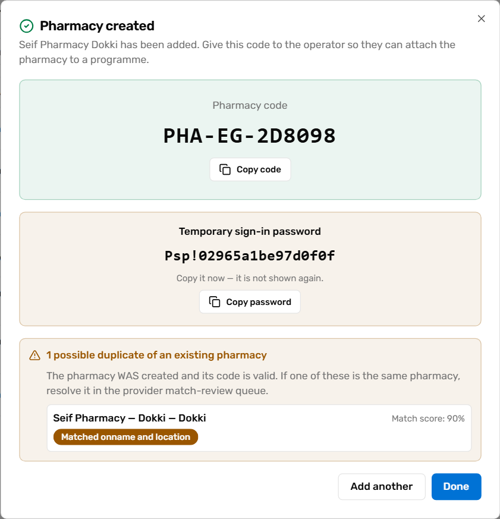
- 1Pharmacy code — the new unique code. Give it to the operator so they can attach the pharmacy to a programme.
- 2Copy code copies it.
- 3Temporary sign-in password — the branch signs in with the phone number and this password.
- 4Copy it now: it is not shown again.
- 5A possible duplicate, if the platform found one: the existing pharmacy, what matched and how closely. The new pharmacy was created and its code is valid — if it is the same pharmacy, resolve it in Provider dedup.
- 6Done closes the window. Add another starts a new pharmacy.
Reset a pharmacy's password
Click Reset password on the pharmacy's row (or on its page) and confirm. The current password stops working immediately.
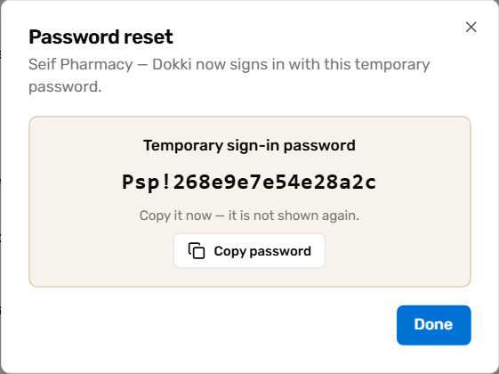
- 1Password reset — the branch now signs in with this temporary password.
- 2Copy password — copy it and hand it over yourself. It is shown once.
A pharmacy's page
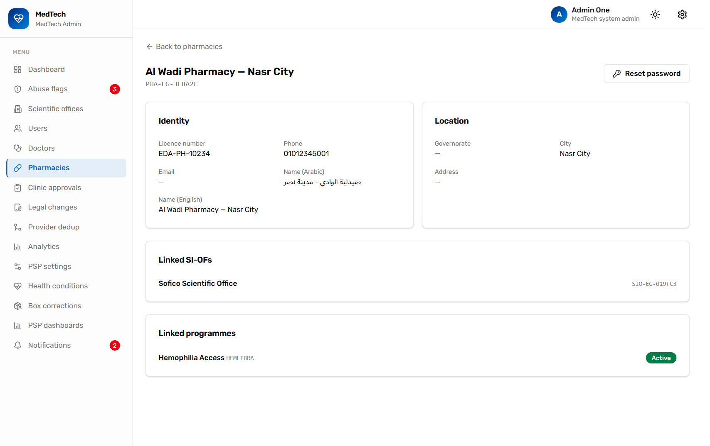
- 1The pharmacy's name and unique code.
- 2Identity — licence number, phone, email and both names.
- 3Location — governorate, city and address.
- 4Linked SI-OFs — the scientific offices the pharmacy is linked to.
- 5Linked programmes — the programmes it is attached to, with their status.
- 6Reset password, as above.
Provider dedup
The same doctor or pharmacy can end up registered twice, with two codes. Provider dedup shows the pairs the platform suspects are the same provider, so you can merge them or mark them as different.
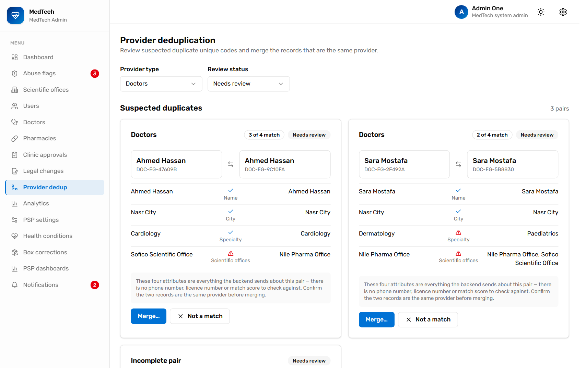
- 1Provider type — Doctors or Pharmacies.
- 2Review status — Needs review shows the pairs still waiting for you.
- 3How many of the four compared details match (name, city, specialty and scientific offices).
- 4A detail that Differs between the two records is marked with a warning sign.
- 5Merge… merges the two records into one.
- 6Not a match records that they are different providers; the pair leaves Needs review.
Compare carefully: these four details are all the platform shows about a pair. Below the pairs, All providers lists every doctor and pharmacy with its unique code and review status. A pair marked Incomplete pair cannot be merged, because one of its records no longer exists.
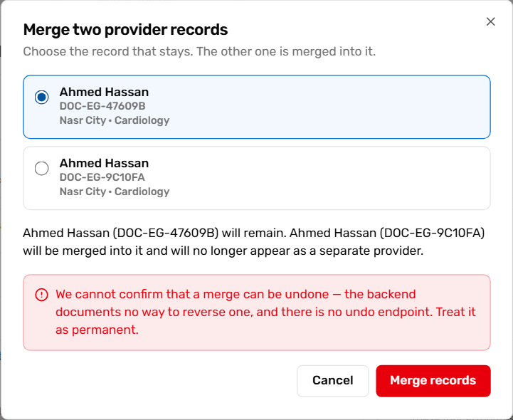
- 1Choose the record that stays. The other one is merged into it.
- 2Pick the record to keep.
- 3The summary says which record remains and which one disappears.
- 4Treat a merge as permanent: there is no undo.
- 5Merge records merges them.
Clinic approvals
Doctors register their clinics in the doctor portal. A new clinic cannot take bookings until you approve it.
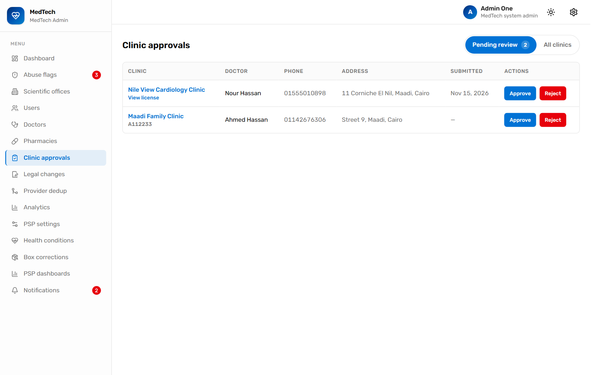
- 1Pending review — the clinics waiting for a decision, with their number.
- 2All clinics — every clinic with its state, with search and a state filter.
- 3View license opens the clinic's licence. If the doctor typed a licence number instead of uploading a document, the number is shown.
- 4Approve makes the clinic bookable. A message names the clinic you approved.
- 5Reject asks for a reason. The doctor sees it exactly as you write it, so say what needs to change.
Click a clinic's name to open its page.
A clinic's page
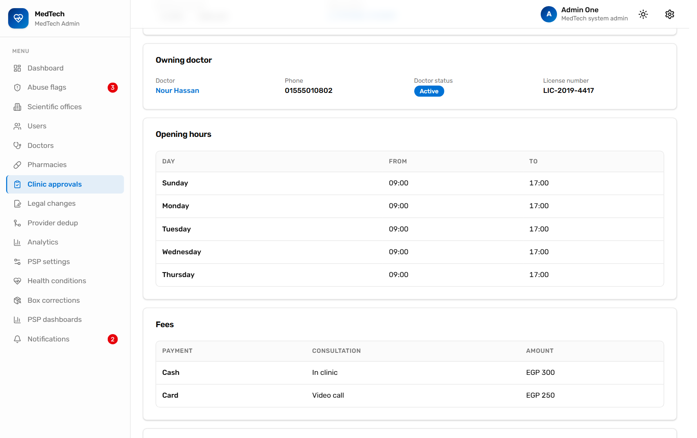
- 1Owning doctor — the doctor, their phone, status and licence number.
- 2Opening hours — the clinic's weekly schedule.
- 3Fees — how patients pay for each kind of consultation.
Above these are the licence and the Practice details (address, clinic type, booking channels, map location). At the bottom, Review trail shows when the clinic was submitted, approved or rejected. Approve and Reject sit at the top of the page.
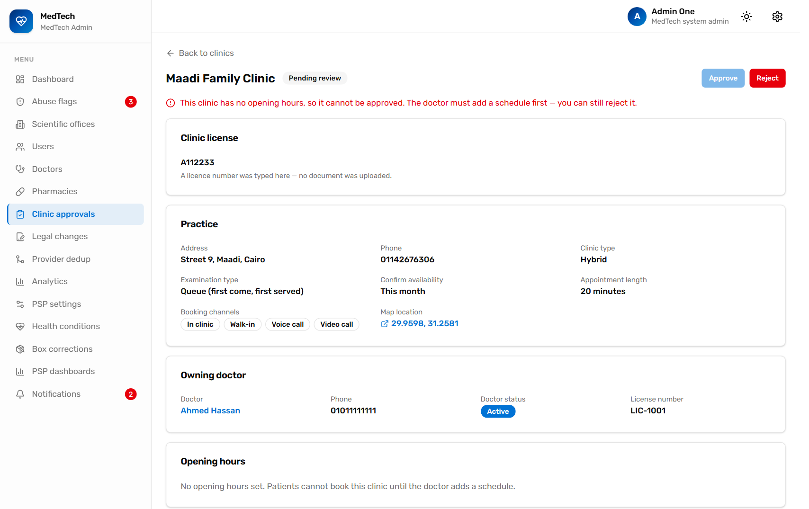
- 1The clinic is Pending review.
- 2The clinic has no opening hours, so it cannot be approved yet. The doctor must add a schedule first.
- 3Approve is disabled.
- 4Reject is still available.
A rejected clinic cannot be approved from here. The doctor corrects it and submits it again, and it comes back to Pending review.
Legal change requests
When a doctor wants to change a legal detail — legal name, specialty, licence number or clinic licence — the request comes to Legal changes. The doctor stays bookable while the request waits.
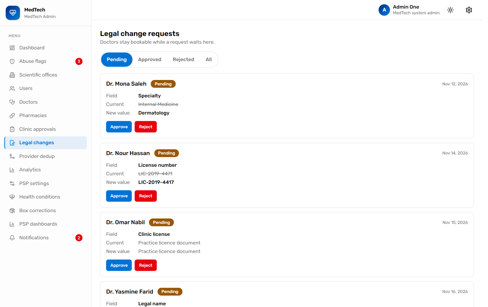
- 1Show Pending, Approved, Rejected or All requests.
- 2The doctor and the request's status.
- 3Field — what the doctor wants to change. The Current value is crossed out under it.
- 4New value — what the doctor asks for. For a document, Open document opens it.
- 5Reject refuses the change; Approve, beside it, accepts it.
To reject, you must give a Reason for rejecting. The doctor sees it.
PSP settings
PSP settings holds the platform-wide rules that only MedTech can set.
Platform coupon limit
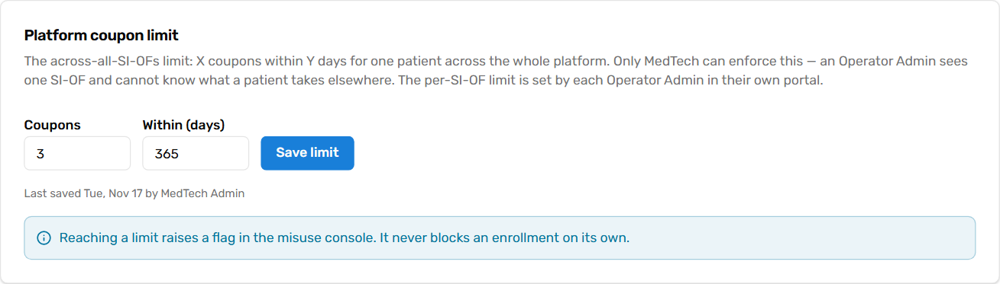
- 1Coupons — the most coupons one patient may receive…
- 2Within (days) — …in this many days, across every scientific office together.
- 3Save limit saves it.
- 4Who saved the limit last, and when.
- 5Reaching the limit raises a flag in Abuse flags. It never blocks an enrolment on its own.
Only MedTech can apply this limit, because an office only sees its own programmes and cannot know what a patient receives elsewhere. Each office sets its own, separate limit in its portal.
Patient registration fields
These are the fields a patient fills in when creating an account in the app.
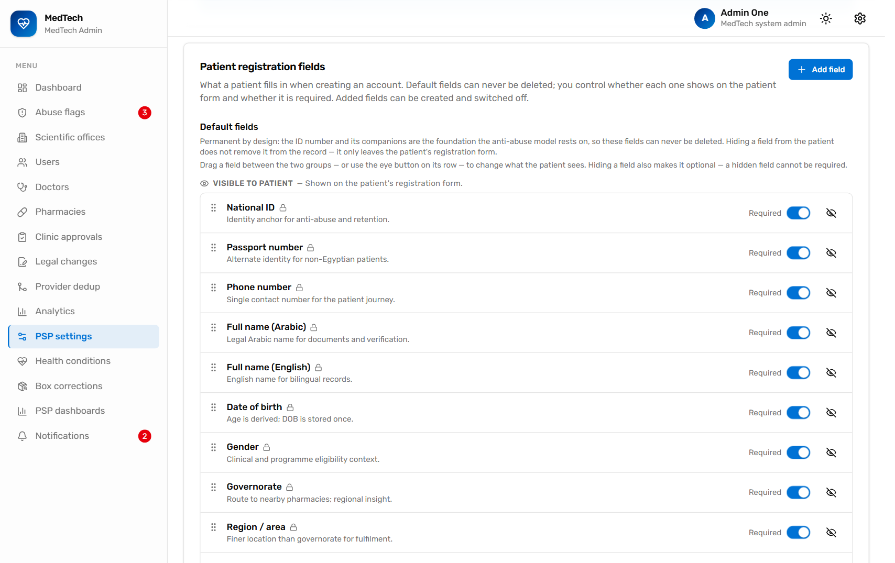
- 1Add field adds a field of your own: an English and an Arabic label, a Type (Text, Number, Date or Choice) and whether it is Required.
- 2Default fields — the built-in fields, such as the national ID and its card photos. They can never be deleted.
- 3Visible to patient — the fields shown on the patient's form. Below this group, Not visible to patient holds the hidden ones.
- 4Required — whether the patient must fill the field in.
- 5The eye hides a field from the patient (or shows it again). You can also drag a field between the two groups.
Hiding a field also makes it optional, because a hidden field cannot be required. Hiding only removes the field from the patient's form; it does not remove it from the record. Fields you added are listed under Added fields, where Switch off retires one (it stays listed, marked Off) and Switch on brings it back.
Health conditions
Health conditions is the fixed list that programmes are tagged with and that patients search by. Only MedTech keeps it.
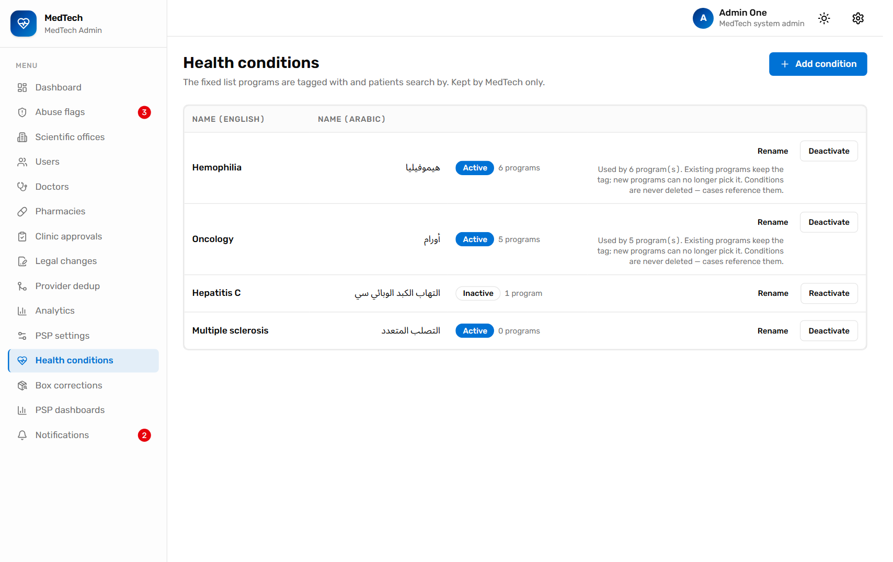
- 1Add condition — enter the name in English and in Arabic.
- 2The condition's status (Active or Inactive) and how many programmes use it.
- 3Deactivate retires a condition. Rename, beside it, corrects its name.
- 4Before you click, the row tells you what deactivating means: existing programmes keep the tag, but new programmes can no longer choose it.
- 5Reactivate brings an inactive condition back.
Conditions are never deleted, because cases refer to them.
Abuse flags
The platform watches for patterns that may mean misuse across several scientific offices — for example one patient reaching the platform coupon limit through different offices. It raises a flag; a person decides what to do.
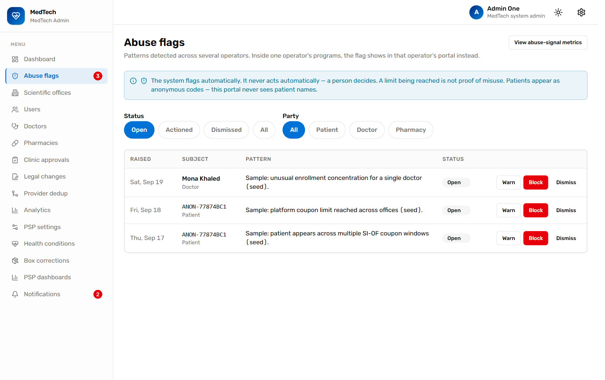
- 1The menu shows how many flags are open.
- 2The rule: the system flags automatically but never acts on its own, and reaching a limit is not proof of misuse. Patients appear only as anonymous codes — this portal never sees their names.
- 3Status — Open, Actioned, Dismissed or All.
- 4Party — Patient, Doctor, Pharmacy or All.
- 5The subject of the flag. A patient is an anonymous code; a doctor or pharmacy is shown by name.
- 6The decisions on each open flag: Warn, Block and Dismiss.
- 7View abuse-signal metrics opens the abuse tab of PSP dashboards.
| Decision | What it does |
|---|---|
| Warn | Records a warning and notifies the party. Nothing is blocked. |
| Block | Suspends the party's access to the programmes until the block is lifted. Use it when a warning has not changed the pattern. |
| Dismiss | Records that a person reviewed the pattern and found no misuse. |
Patterns inside a single office's programmes are not shown here: they appear in that office's own portal.
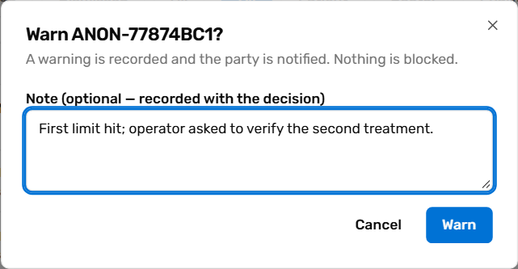
- 1The decision and the anonymous code it applies to.
- 2What the decision does.
- 3Note — optional; it is recorded with the decision.
- 4Warn confirms. The flag moves to Actioned, with who decided and when.
PSP dashboards
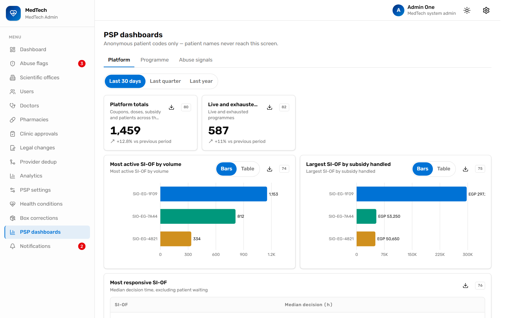
- 1Three tabs: Platform (figures for the whole platform), Programme and Abuse signals.
- 2The period: Last 30 days, Last quarter or Last year.
- 3The change compared with the previous period of the same length.
- 4The download button exports the figure's data as a CSV file.
- 5Switch a figure between views, such as Bars and Table.
Every figure uses anonymous patient codes only; names never reach these dashboards. Offices are shown by their codes. A figure that says Not built yet has no data behind it yet.
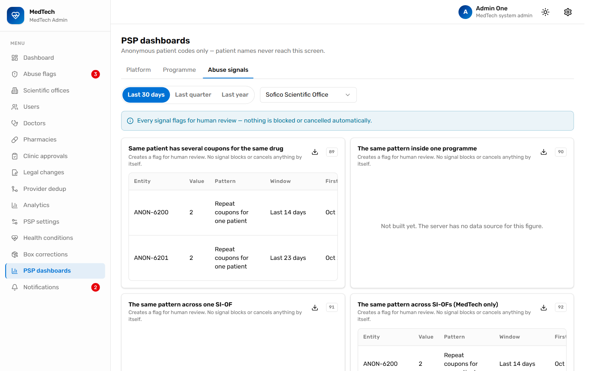
- 1Every signal only flags for human review — nothing is blocked or cancelled automatically.
- 2Patients appear by anonymous code.
- 3On the Programme and Abuse signals tabs, choose the scientific office to look at.
Analytics
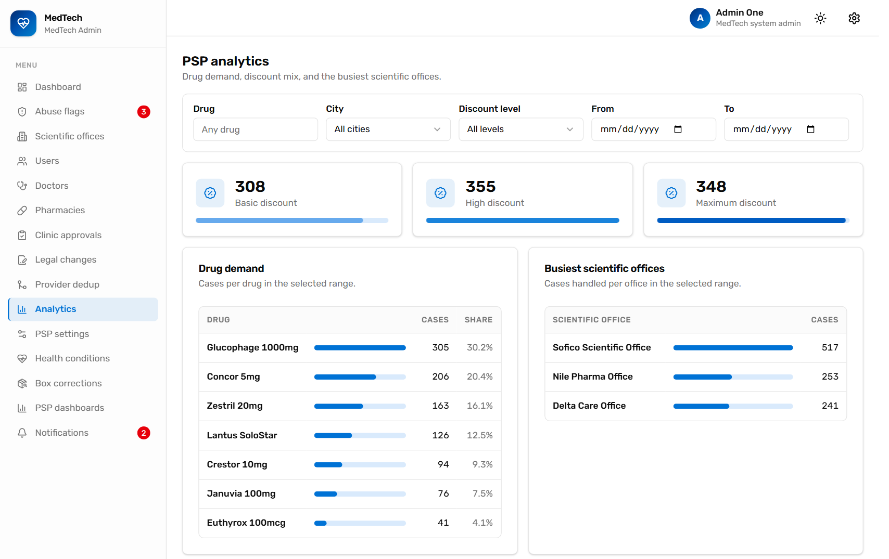
- 1Narrow the figures by Drug, City and Discount level. They update as you choose; Clear appears to remove the filters.
- 2From and To set the date range.
- 3The discount mix — how many fall into each discount level.
- 4Drug demand — cases per drug, with each drug's share.
- 5Busiest scientific offices — cases handled per office.
Box corrections
Sometimes a pharmacist records the wrong box serial at the counter. Box corrections lets you fix which box was handed over, using the delivery reference printed on reports. No patient identity appears on this page.
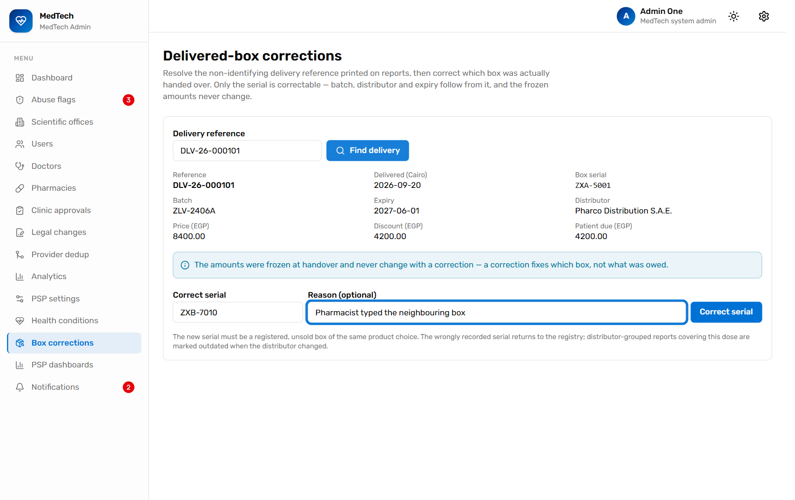
- 1Type the Delivery reference (
DLV-…) and click Find delivery. - 2The delivery as recorded: box serial, batch, distributor, expiry and the amounts.
- 3The amounts were frozen at handover. A correction never changes them — it fixes which box, not what was owed.
- 4Correct serial — the serial of the box that was really handed over.
- 5Reason (optional) — why you are correcting it.
- 6Correct serial saves the correction.
The new serial must be a registered, unsold box of the same product choice. The wrongly recorded serial goes back to the registry.
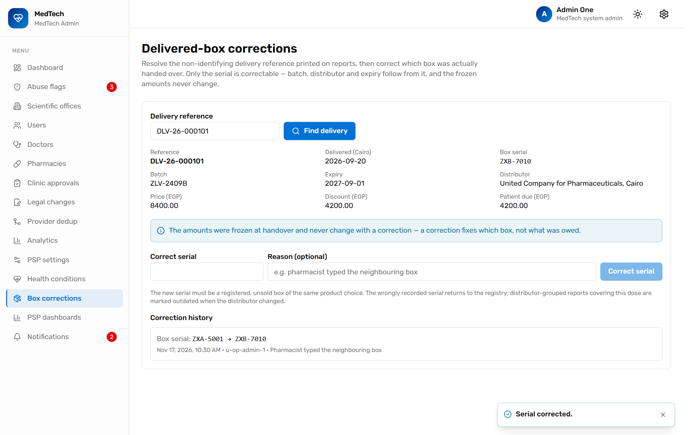
- 1The new serial. The batch, distributor and expiry follow from it; the amounts stay the same.
- 2Correction history — every correction made to this delivery.
- 3The old and new serial, when, by whom and why.
| You see | What it means |
|---|---|
| No delivered dose carries this reference. | Check the reference on the report. |
| This serial is not in the batch registry — a correction must name a registered box. | The serial is mistyped or the box is not registered. |
| This serial is already on another completed delivery. | That box is already recorded on another completed delivery. |
| This serial belongs to a batch of a different product choice. | The box is a different product or strength. |
| That is already the recorded serial. | Nothing to correct. |
Notifications
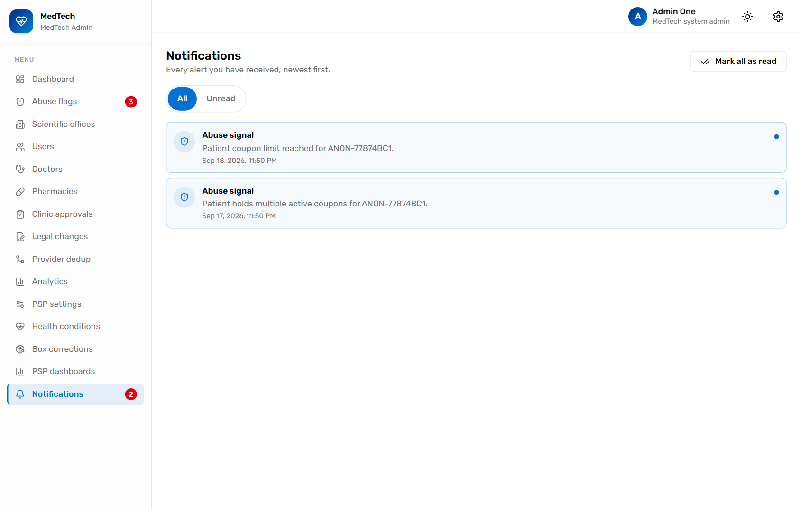
- 1Mark all as read clears the unread dots.
- 2All shows your whole history; Unread only what you have not read.
- 3A notification. Today these are raised when the system flags a pattern that spans several scientific offices — the patient appears by anonymous code.
- 4The menu shows how many notifications are unread.
Quick answers
A patient wants their data deleted. Use Users, find the patient, click the bin. If they ask for everything to be erased, choose Permanently erase everything — there is no second chance from this page.
A doctor cannot be activated. Open the doctor's page and read Activation: it lists what is missing, usually a document still waiting for your review or the Arabic name.
I cannot approve a clinic. Open the clinic. If it has no opening hours, the doctor has to add a schedule first; you can still reject it with a reason.
A pharmacy lost its password. Click Reset password on its row and hand over the new temporary password yourself.
Two records are the same doctor. Merge them in Provider dedup. Choose the record to keep carefully — a merge cannot be undone.
Does a flag block a patient? No. A flag only asks for a decision. Nothing is blocked until a person chooses Block.